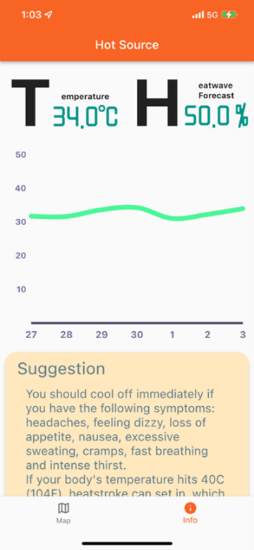

商業智慧研究中心
助理工程師
參與 Flutter、Java Spring 與網頁系統開發。
SOFTWARE ENGINEER
CHANG, EN-YU
以軟體開發與 AI 技術，改善工作流程並將想法落實到實際場域。

04 / PROJECTS
企業專案、軟體接案、校園作品、個人興趣。

AUO · EDGE AI
將 SPIIDER-P 資料收集裝置升級為 AIoT 應用，導入 AI 模型並開發操作網頁，讓機台資料支援生產預測。
AUO · INTERNAL TOOLS
開發與維護內部系統，涵蓋 ETL 資料流程、AI 郵件處理、Edge AI 導入，以及伺服器監控與更新工具。
CAPSTONE · GAME
結合音樂與 ARPG 的遊戲專題，擔任組長並負責後端、資料庫與遊戲企劃，通過國科會大專學生研究計畫。
CAPSTONE · APP
跨平台學生行事曆，擔任組長並負責首頁、行程、後端功能與 AWS 架設，獲專題競賽第二名。
BIRC · MOBILE APP
以 Flutter 開發跨平台應用，透過手機鏡頭與酵素反應，檢測洗菜水中的農藥殘留。

BIRC · WEB & APP
支援簽到退與請假等假勤作業，並提供手機 App 開門功能，包含網頁、App 與 Java 後端開發。

NASA SPACE APPS CHALLENGE
參加 NASA International Space Apps Challenge 的作品，開發用於偵測熱浪的跨平台應用程式。
PERSONAL · DESKTOP APP
吉他初學者指法教學工具，提供預設指法，也能自行新增和管理指法。